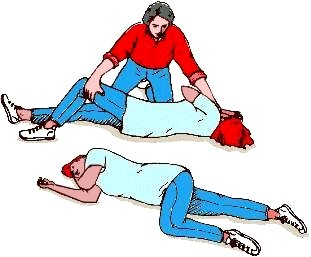

Reanimación Cardiopulmonar Cerebral (RCPC)
La Reanimación Cardiopulmonar Cerebral (RCPC) es un procedimiento de emergencia para salvar vidas que se utiliza cuando una persona ha dejado de respirar y el corazón ha cesado de palpitar. Esto puede suceder después de una descarga eléctrica, un ataque cardíaco, ahogamiento o cualquier otra circunstancia que ocasione la detención de la actividad cardíaca.
Esta tiene dos propósitos fundamentales:
- Mantener los pulmones llenos de oxigeno cuando la respiración se ha detenido.
- Mantener la sangre circulando llevando oxigeno al cerebro, al corazón y las demás partes del cuerpo.
Como aplicar RCPC
■ Revisa el lugar en busca de peligro inmediato. Asegúrate de no ponerte en peligro al realizar la RCPC. ¿Hay un incendio?, ¿la persona está tendida en una carretera? Haz lo que sea necesario para desplazar a la víctima a un lugar seguro.
■ Antes de iniciar el masaje debes estar seguro de la ausencia de pulso ya que es peligroso hacer compresiones cuando la víctima aun tiene circulación. Si tienes dudas, revisa su respiración, coloca tu oído cerca de la nariz de la víctima y si escucha una respiración leve o si tose, NO realices la reanimación. Hacerlo podría provocar que el corazón se detenga.
■ Si tiene pulso, así sea debil; pero no respira, debes aplicar sólo la respiración artificial, osea las bocanadas de aire tal como se explica a continuación; pero sin el masaje cardíaco.
■ Pide ayuda médica de inmediato. si estás acompañado, que otro solicite la ayuda mientras tu asistes a la víctima.
En un adulto
1 Pon a la víctima boca arriba. Asegúrate de que esté recostada lo mejor posible para evitar alguna lesión mientras realizas las compresiones torácicas.
2 Coloca el talón de la mano en el esternón de la víctima, exactamente entre los pezones. Coloca tu otra mano sobre la primera con la palma hacia abajo. Posiciona tu cuerpo directamente sobre tus manos para que tus brazos queden rectos y rígidos.
Realiza 30 compresiones torácicas. Presiona con ambas manos directamente sobre el esternón para realizar una compresión, lo que ayudará a que el corazón lata. Las compresiones torácicas son fundamentales para corregir el ritmo cardíaco anormal (fibrilación ventricular o taquicardia ventricular sin pulso).
Debes contar cada compresión de la siguiente manera: mil uno, mil dos, mil tres y así sucesivamente.

3 Asegúrate de que las vías respiratorias de la víctima estén libres. Para abrir las vías respiratorias coloca tu mano en su frente y dos dedos en su mentón e inclina su cabeza hacia atrás.
Si sospechas de una lesión en el cuello, jala la mandíbula hacia adelante en lugar de levantar el mentón. Si eso no llega a abrir las vías respiratorias, inclina su cabeza y levanta su mentón con mucho cuidado.
4 Manteniendo las vías respiratorias abiertas, aprieta la nariz de la víctima para cerrarla. Coloca tu boca sobre la suya e insufla durante aproximadamente un segundo. Asegúrate de hacerlo lentamente, ya que eso asegurará de que el aire vaya a los pulmones y no al estómago.
Si lo haces correctamente, deberías ver que el pecho se infla un poco y también sentirás que el aire entra. Dale 3 insuflaciones mas.
Si la insuflación no funciona, reposiciona la cabeza de la víctima e inténtalo nuevamente.
Si no funciona la segunda vez, es posible que se esté asfixiando. Realiza compresiones abdominales (la maniobra de Heimlich) para eliminar la obstrucción.
5 Continua realizando 30 compresiones torácicas por 4 ventilaciones (insuflaciones) hasta que llegue ayuda, el tiempo aproximado de la compresión y las insuflaciones debe durar aproximadamente 30 segundos, por lo cual son 2 maniobras por minuto.
Para evitar posar tus labios directamente sobre los de la víctima, te recomendamos hacer un agujero del tamaño de tu boca en un pedazo de tela, gasa, papel, bolsa plástica, etc. y usarlo como barrera al momento de insuflar.
6 En caso de que el pulso se restablezca espontáneamente suspende las maniobras de masaje cardíaco y continúa con las de respiración y repite el procedimiento hasta que un médico este presente.
7 Si durante la espera o el traslado la víctima recupera el pulso y la respiración colócala en posición lateral de seguridad o recuperación y no dejes de observar sus signos vitales.
Está técnica puede ser realizada por una o dos personas, cuando son dos los auxiliadores, uno realizará las insuflaciones y el otro la compresión.
Si son 2 los auxiliadores se hacen 15 pulsaciones y 2 insuflaciones, para un total de 4 ciclos por minuto.
Deben coordinarse y permanecer muy atentos a los movimientos del compañero. Todo movimiento que se realice debe ser dicho en voz alta para que haya mejor coordinación.
En niños de 1 a 8 años
1 Coloca la base de una mano en el esternón, justo debajo de los pezones. Asegúrate de que la mano no esté en el extremo del esternón. Manten la otra mano en la frente del niño, sosteniendo la cabeza inclinada hacia atrás.
2 Realiza las compresiones e insuflaciones tal como se describe más arriba, osea 30x4 si estás solo o 15x2 si estas en equipo.
Debes hundir entre 3 y 5 cm el pecho del niño, dependiendo su tamaño.
En bebés
1 Coloca dos dedos en el esternón, justo debajo de los pezones. Asegúrese de no presionar en el extremo del esternón. Manten la otra mano en la frente del bebé, sosteniendo la cabeza inclinada hacia atrás.
2 Realiza las compresiones e insuflaciones tal como se describe más arriba, osea 30x4 si estás solo o 15x2 si estas en equipo.
Aplica presión hacia abajo en el pecho del bebé, de tal manera que se comprima entre un tercio y la mitad de su profundidad.
3 Cubre firmemente con tu boca la boca y la nariz del bebé. Manten la barbilla levantada y la cabeza inclinada. Cuidadosamente da 4 insuflaciones boca a boca. Cada insuflación debe tomar alrededor de un segundo y hace que el pecho se levante.